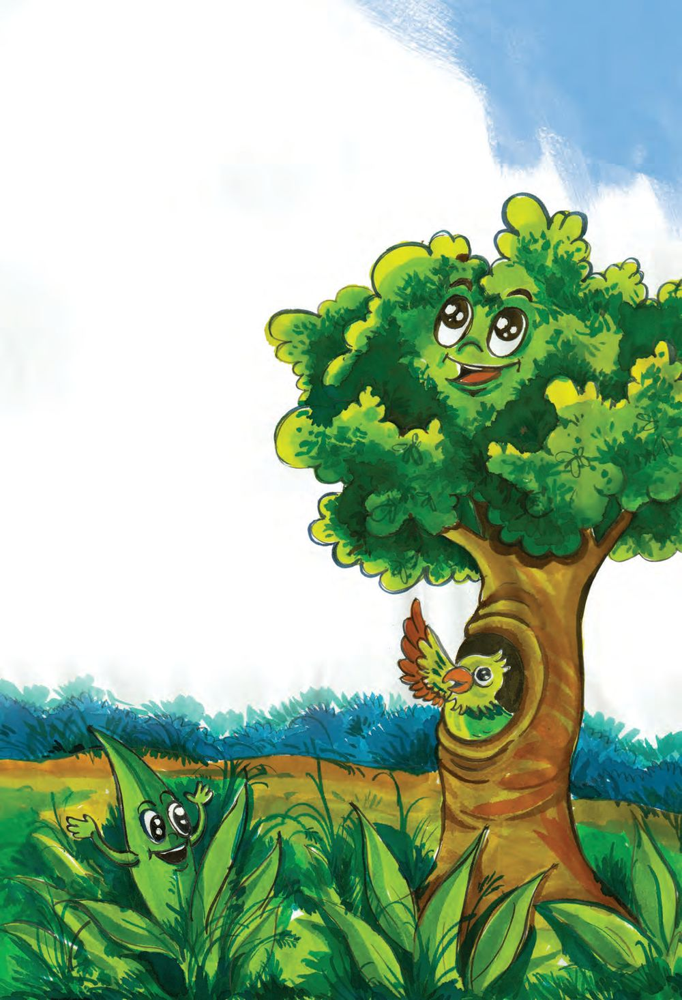
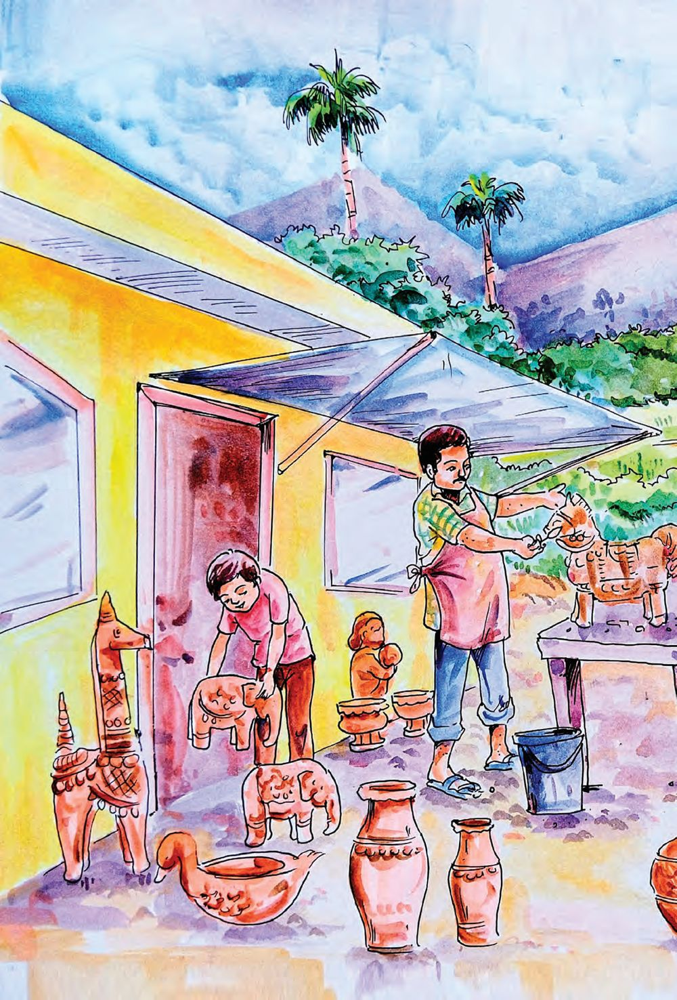
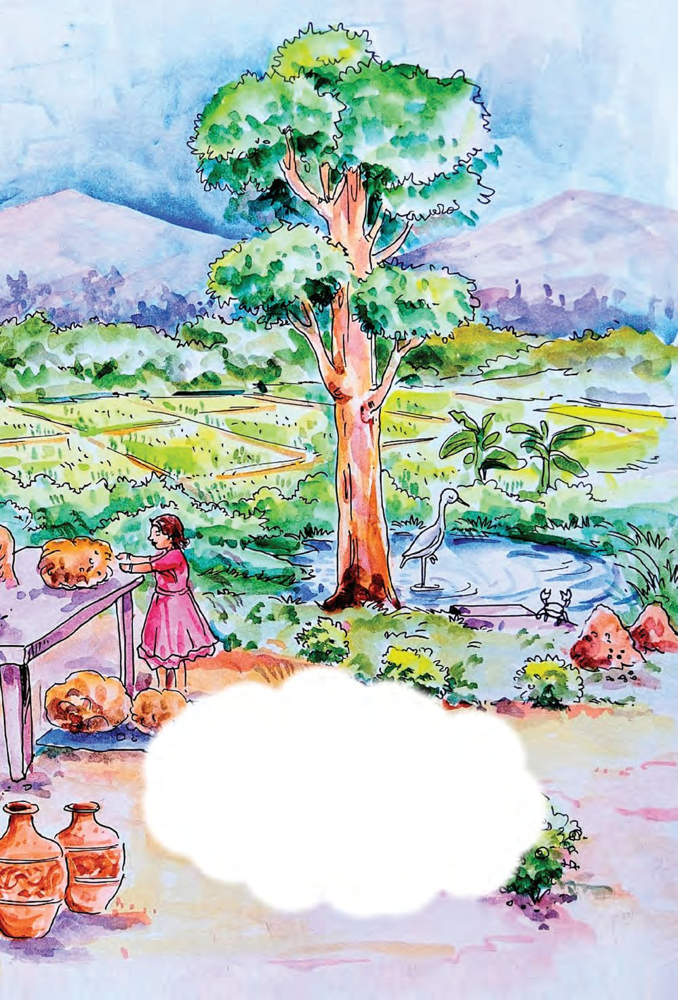

Kuttan and friends started their game
And then came the rain drizzling
The sky darkened and lightning flashed
Kuttan and friends ran to their homes
Little rain, fresh rain, pitter patter sounds
Then it became mighty rain
The rain stopped and the clouds vanished
The soil cooled and flowers bloomed
Kuttan joined his friends to play
And had enough fun, Thaka Dhimi Thom..
Page 39

Figure fig_ch02_p039_01 (Page 39)
Watching raindrops
falling on my leaves
and scattering is
a fun indeed.
I did not get wet in
the rain because
I was in this hole of
the tree. It’s very
cold out here ...
The soil is
wet and drenched. I
will now have new
shoots coming.
What are the changes happen in our surroundings after the rain?
Write them in your Environmental Science Diary.
Does it rain all the time in your locality?
In which months do we get rain?
See the Newspaper Headlines about the rainfall in the month of
June in Keralam.
Heavy rainfall in
Kozhikode district
Severe decrease in rainfall in
Thiruvananthapuram district
How do we find out the difference in the amount of rainfall?
Can we measure the rainfall?
We can see water in the empty vessels placed in the courtyard after
the rainfall. The water in the vessel indicates the amount of the
rainfall. Can we measure the water? Shall we make an instrument
to measure rainfall?
Rain Gauge
The rain gauge is a simple instrument to measure rainfall.
How can we make this?
How to make
Fix the scale to the glass bottle as shown in the picture. Place
the funnel on top of the glass bottle. Fix the bottle in an open
space outside. Note down the water level at fixed intervals.
Make a rain gauge with the help of your friends and measure the
rainfall each day and complete the table below.
Remember to note down the amount of rainfall received each day
on the class bulletin board.
Which day has the highest rainfall?
Which day has the lowest rainfall?
Is there a day that did not receive rain at all?
A rain gauge for me
Make a rain gauge at home.
Write the amount of rainfall received each day in your Environmental
Science Diary. Present your findings.
Where does the rainwater go?
Where does the rainwater go after the rainfall?
Let us do an activity.
Picture 1
Picture 2
Plastic
bottle
Fill dry soil in a plastic
bottle.Make a hole at the
bottom of it.
Water
Needle
Use the objects in Picture 2 to get rain into the soil in the bottle
of Picture 1.
What happenes to the water when it touches the soil?
Present your findings.
Write them in your Environmental Science Diary.
Draw pictures too.
Water sources
The well in my
house is filled
with water.
In my house, there
is a borewell.
We cannot see
the water
level in it.
The pond in our
farm land gives
us water needed
for farming and for
household
purpose.
Where do you get water for your homes?
Write down.
Suranga and Keni
The method of building tunnels
that are just enough for a
person to walk through and
to bring groundwater outside is called
Suranga. This method has been used
for ages to collect water in Kasaragod
district and some parts of Karnataka.
The word Keni means well. Keni is
constructed by inserting hollowed
wood of large trees into the earth. Keni
is only deep enough for taking water
with vessels directly. It is still used by
many tribal groups in Keralam.
Write down a few situations in which water is wasted.
l
l
l
What can we do to stop wasting water?
l
l
Don’t leave taps open carelessly.
l
l
l
l
Water purification
How does the muddy rain water go clean when it reaches the well?
A part of the rainwater seeps into the soil. It filters down
through the soil. This becomes groundwater and reaches the
well and other water sources. The water becomes clear when
it filters down through the soil.
46
Turning muddy water into clear water
Take three coconut shells and make a hole each in them. Place
cotton or cloth over the hole. Fill gravel, sand and coconut shell
charcoal in each of the shells. Arrange it over a glass as shown in
the picture. Now pour muddy water into coconut shell at the top.
Gravel
Sand
Coconut shell charcoal
What did you find out?
Write in your Environmental Science Diary.
The same method is used to filter water in the rainwater tank.
Different types of water purifiers
are used in institutions and homes.
Seawater is purified and used as
drinking water in some countries
with severe pure water shortage.
The water received in homes from
public water supply system is
collected from water sources and
purified.
47
What are the features of the soil used to create shapes?
Examine the colour and the size of the grains.
Are the soils seen around us the same?
Let us examine.
Collect soil from your school courtyard, underneath a tree,
biodiversity garden and playground.
Observe the soil and complete the table.
The place of
collection
Colour of the soil
Other features
Do all the soil that you collected have the same colour?
Are there differences in the size of grains?
Write the findings in your Environmental Science Diary.
The story of the soil
Friends, you know me.. I am the
soil. I am of different types. My
nature is different in different
places. There are lakhs of
micro-organisms and many other
compounds in me. I became like
this through thousands of years
of continuous biological and
non-biological processes.
49
You have read the beginning of the story of the soil. Find out more
information about the process through which the soil is formed.
Discuss with your friends, complete the story of the soil and write
it in your Environmental Science Diary.
Within the soil
Which are the creatures that
live within the soil? Try to write
it.
Observe the soil in your school
surroundings using a hand lens.
Which creatures were you able
to find?
Where do they get the food,
water and the air that they need?
Let us do some experiments to find this out.
Air in the soil
Is there air in the soil?
How can we find out?
Take some dried clumps of soil.
Take some water in a glass and
put the soil clumps in it. What is
happening? Write the findings
in your Environmental Science
Diary. Share the findings with
your friends.
Water in the soil
Are there traces of water in the
soil?
How can we ϐind out?
Collect the soil from the
Biodiversity Garden and place it
inside a transparent bottle. Close
the bottle and place it in sunlight.
Examine it after ten minutes.
What changes did you ϐind?
What is seen on the sides of the
bottle?
How did it happen?
Prepare an observation note.
Biomass in the soil
Fill half of a glass with the soil
from the Biodiversity Garden.
Pour water into this and mix
well. What can you see? Prepare
an experiment note.
Biomass includes dried leaves, parts of stem, remains of
creatures etc. Plants grow abundantly in soil rich with more
biomass. Soil with biomass is the food of earthworms.
Where is the soil with more biomass in your home surroundings?
Find out.
51
Page 52

Figure fig_ch02_p052_01 (Page 52)
Page 53

Figure fig_ch02_p053_01 (Page 53)
There are lakhs of creatures within and
outside the soil. Plants grow by absorbing
water and minerals from the soil. Creatures
including human beings depend on the soil
for many purposes. We can survive only
by protecting the soil from pollution and
preserving it from loss of fertility.
Let us assess
1. Complete the concept map.
Components in the soil
•
•
•
Uses of water
•
•
•
Water and
Soil
Creatures in the soil
•
•
•
Water sources
•
•
•
2. Kuttan and his friends reached the river side to play. They threw
the sweet wrappers into the water. A fish from the river told
them:
The river is
important to
us just as your
home to you.
Do you agree with this opinion? Why? What should we do to
protect the water sources?
Extended activities
1. Collect some stones of different colours and crush them well.
Draw pictures of flowers and other things on a chart paper and
stick the powdered soil in the pictures using gum.
2. Organise an exhibition in your school using different types of
soil collected.
54